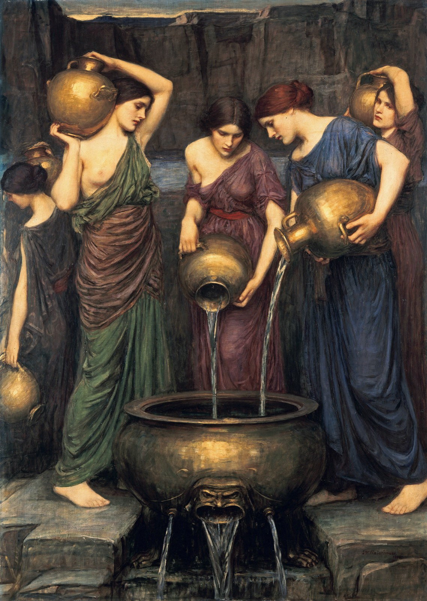

욕망을 줄이면 정말 행복해질까? — 쇼펜하우어와 불교가 말한 욕망 줄이기 기술
몇 달을 벼르던 물건이 드디어 집에 도착합니다. 택배를 뜯는 날은 일단 기분이 좋습니다. 그런데 1~2주가 지나면 그 물건은 그냥 집에 있는 물건 중 하나가 되죠. 그러다 어느새, 또 새 아이템을 검색하고 있는 자신을 발견합니다. 승진도, 이사도, 오래 바라던 합격도 비슷합니다. 분명히 즐거움이 있었는데 생각보다 빨리 사그라들고, 곧 다른 즐거움을 찾게 됩니다.
이 경험에는 오래전부터 두 가지 해결책이 있었습니다. 하나는 "더 큰 것을 바랄 것"이고, 다른 하나는 "덜 바랄 것"입니다. 19세기 독일의 철학자 쇼펜하우어와 초기 불교 경전은 둘째 답을 골랐습니다. 그런데 결정적으로 "얻어도 만족이 오지 않는다"는 생각은 똑같지만, 덜 바라는 일이 무엇을 대가로 치르게 하는지는 차이가 있습니다.
"욕심을 줄이면 행복해진다"는 말을 들을 때마다 반쯤 수긍하고 반쯤 미심쩍었던 분들께 고전과 최신 연구로 답을 드리고자 합니다. 우선, 철학에서는 이 문제를 쇼펜하우어의 의지(Wille)와 불교의 갈애(渴愛)라는 이름으로 다룹니다.
원해서 얻었는데 왜 허전한가 — 진자와 밑 빠진 체
아르투어 쇼펜하우어(1788~1860)는 그가 서른 살에 완성한 위대한 작품, 『의지와 표상으로서의 세계』에서 이 허전함을 하나의 틀로 나타냈습니다. 그가 보기에 모든 원함은 결핍에서 나옵니다. 무언가가 없어서, 모자라서, 그래서 괴로워서 원합니다. 그는 이렇게 말합니다. "모든 의욕은 결핍에서, 따라서 모자람에서, 따라서 고통에서 생겨난다"[1]. (참고로 이 책은 1818년 3월에 완성되어 그해 12월에 출간됐습니다[2].)
그런데 말입니다, 얻으면 끝나야 할 고통이 여전히 끝나지 않습니다. 쇼펜하우어는 그 이유를 두 가지로 봅니다. 첫째, 소원을 이뤄도 곧바로 새 소원이 생깁니다. 어떤 대상도 지속되는 만족을 주지 못하고, 거지에게 던져진 동냥처럼 오늘 하루를 버티게 해서 내일의 비참을 연장할 뿐이라는 것입니다[1]. 둘째는 더 통렬합니다. 원하는 것이 너무 쉽게 채워져 더 바랄 것이 없어지면, 공허와 지루함이 치고 들어옵니다. 그래서 삶은 "고통과 권태 사이를 진자처럼 왔다 갔다" 합니다[1].
그는 이 순환을 그리스 신화의 다나이데스에 빗댑니다. 밑 빠진 체로 물을 긷는 자매들처럼, 우리는 만족이 매번 기대를 저버리는 것을 보면서도 서둘러 다음 욕망으로 달려간다는 것입니다[1]. 여기서 그의 유명한 결론이 나옵니다. 행복은 적극적인 무엇이 아니라 소극적인 것, 곧 어떤 고통이나 결핍에서 잠시 풀려난 상태일 뿐이며, 그 뒤에는 새 고통 아니면 권태가 따라온다는 것입니다[1].

2천 년 앞서 인도에서 나온 같은 진단
이 진단은 쇼펜하우어가 처음 한 말이 아닙니다. 그 자신도 알고 있었습니다. 스탠퍼드 철학 백과는 도서관 대출 기록을 근거로, 그가 대표작을 완성하기 전인 1813년 12월부터 『바가바드기타』를, 1814년 3월부터 『우파니샤드』를 읽기 시작했다고 적습니다[2]. 인도 사상은 그에게 신선한 자극이었습니다.
초기 불교 경전은 같은 내용을 식물에 비유합니다. 『법구경』 갈애품은 방일하게 사는 이의 갈애는 "덩굴처럼 자란다"고 하고, 그 끈적이는 갈애에 지는 사람에게는 "비 온 뒤 풀처럼 슬픔이 자란다"고 말합니다[3]. 덩굴은 누가 심어서 자라는 것이 아닙니다. 두면 자랍니다. 쇼펜하우어가 '맹목'이라 부른 것과 같은 비유입니다. 경전은 한 단계 더 나아갑니다. 베어도 뿌리가 남은 나무는 다시 돋아나듯, 잠재된 갈애를 뿌리째 뽑기 전에는 괴로움이 거듭 솟는다는 것입니다[3]. 가지를 치는 일, 곧 욕망을 하나씩 채우는 일로는 끝나지 않는다는 점에서 쇼펜하우어와 같지요.
『숫타니파타』는 한 발 더 나가 만족 자체를 문제 삼습니다. 소 치는 다니야의 이야기에서 마라는 "자식 있는 이는 자식으로 기뻐하고, 소 있는 이는 소로 기뻐한다"고 노래하고, 붓다는 이를 이어받습니다.
자식 있는 이는 자식으로 슬퍼하고, 소 있는 이는 소로 슬퍼한다. 사람의 슬픔은 가진 것에서 오니, 가진 것이 없는 이는 슬퍼할 것도 없다.
— 『숫타니파타』 1.2 다니야경, Thanissaro Bhikkhu 영역에서 (번역)[4]
쇼펜하우어에게 고통은 만족의 실패에서 왔지만, 여기서는 성공한 만족조차 잃을 것을 하나 더 만든 일이 됩니다. 그래서 다른 경에서는 "남들이 즐거움이라 하는 것을 성자들은 괴로움이라 하고, 남들이 괴로움이라 하는 것을 성자들은 즐거움이라 안다"는 역설로 승화시키기까지 합니다[5].
두 철학이 내놓은 답, '덜 바라는 기술'
두 철학의 진단이 같으니 처방도 유사합니다. 둘 다 덜 바라라고 합니다. 다만 안을 들여다보면 결이 좀 다릅니다.
쇼펜하우어 쪽에는 층이 있습니다. 가장 낮은 층은 생활의 기술입니다. 후기 에세이 『삶의 지혜』에서 그는 만족이 바라는 것과 얻는 것 사이의 비율에 달려 있다고 보고, 한 사람의 행복을 얻는 것만으로 재지 말고 기대하는 것까지 함께 측정해야 한다고 씁니다[6]. 분자를 키우기 어렵다면 분모를 줄이라는 셈법입니다. 같은 장에 "재물은 바닷물과 같아서 마실수록 목이 마르고, 명성도 마찬가지"라는 문장이 있습니다[6]. 그 위층은 미적 관조입니다. 음악이나 풍경에 빠져 잠시 '나'를 잊는 순간 의지가 멈추는데, 그는 이것이 순간에만 가능하고 삶 전체를 채울 수는 없다고 못 박습니다[1]. 가장 높은 층은 연민과 금욕입니다. 타인이 나와 같은 본성을 가졌음을 인지하는 것에서 도덕이 시작되고, 끝에 가면 의지 자체를 부정하는 자발적 가난과 정결에 도달한다는 것입니다[2].
불교 쪽의 처방은 가지치기가 아니라 뿌리를 향합니다. 『법구경』은 "덩굴이 돋은 것을 보거든 지혜로 그 뿌리를 끊으라"고 하고, 갈애를 이긴 이에게서는 "연잎에서 물이 굴러떨어지듯" 슬픔이 떨어진다고 말합니다[3]. 여기서 덜 바란다는 것은 소원의 개수를 줄이는 일이 아니라, 바라는 마음이 어떻게 생겨나 어디에 가는지를 보는 일입니다.
비유하자면 쇼펜하우어는 수도꼭지를 잠그는 기술이고, 불교의 처방은 수압이 어디서 발생하는지를 보는 기술입니다.
'욕망은 금방 식어 버린다'는 어디까지 맞나
1978년 미국에서 5만 달러 이상에 당첨된 22명과 같은 동네의 비당첨자, 그리고 사고로 하반신 또는 전신이 마비된 29명에게 지금 얼마나 행복한지를 0~5점으로 물은 연구가 있습니다[7]. 당첨자의 현재 행복은 4.00점으로 비교집단의 3.82점과 거의 차이가 없었고, 식사나 대화 같은 일상의 즐거움은 오히려 당첨자가 3.33점으로 비교집단의 3.82점보다 낮았습니다. 사고 피해자의 현재 행복은 2.96점으로 분명히 낮았지만, 흔히 예상하는 만큼 바닥은 아니었습니다[8].
여기까지만 보면 쇼펜하우어의 손을 들어 주고 싶어집니다. 하지만, 또 다른 자료도 있습니다. 스웨덴의 복권 참가자들을 당첨 5~22년 뒤에 추적한 2020년 연구는, 고액 당첨자가 비교집단보다 삶 전반의 만족을 지속적으로 높게 보고했고 그 효과가 10년이 지나도 뚜렷이 줄지 않았다고 보고합니다. 다만 행복감과 정신건강에 미친 효과는 그보다 유의하게 작았습니다[9].
다만 근거의 강도를 말씀드려야 합니다. 1978년 연구는 집단마다 수십 명뿐이고 한 번 물은 것이라, 오늘 기준으로는 스몰 데이터입니다. 2020년 연구는 규모가 크고 분석 계획을 미리 등록했지만, 복권이라는 특수한 사건 하나를 다룹니다. 두 연구 모두 욕망을 줄이면 행복해지는가를 직접 시험한 것이 아니라, 얻으면 행복이 오래가는가를 연구한 것임을 염두에 둘 필요가 있습니다.
덜 바라기의 비용 — 쇼펜하우어의 가장 열렬한 독자의 반론
덜 바라는 기술에는 비용이 있습니다. 그것을 가장 날카롭게 짚은 사람이 쇼펜하우어의 가장 열렬한 독자였던 니체입니다. 젊은 날 쇼펜하우어에 심취해 그에 관한 글까지 썼던 니체는 훗날 방향을 바꿉니다[10]. 『차라투스트라는 이렇게 말했다』에서 그는 "형제들이여, 대지에 충실하라. 하늘 너머의 희망을 말하는 자들을 믿지 말라"고 외치고, 1부의 「몸을 경멸하는 자들에 대하여」에서는 "나는 전적으로 몸이며 그 밖의 아무것도 아니다"라고 선언합니다. 몸과 욕망을 낮춰 보는 자들은 "나를 초인으로 이어 줄 다리가 아니"라는 것입니다[11].
『도덕의 계보』 셋째 논문에서 니체는 금욕이라는 이상을 해부하는데, 스탠퍼드 철학 백과는 그 표적에 종교의 금욕만이 아니라 쇼펜하우어 윤리학이 취한 더 합리적인 형태의 금욕까지 들어 있다고 정리합니다. 니체의 근본 반론은 금욕이 심리적으로 파괴적이고 실천적으로 자기 패배적이라는 것, 곧 고통을 줄이려는 본능적인 자가 치료인데 결국 삶 자체를 깎아 낸다는 것입니다[10]. 그가 내놓은 대안은 욕망을 놓는 것이 아니라 삶을 긍정하는 것, 자기 운명을 사랑하라는 '아모르 파티(운명애)'였습니다[10].
이 반론을 받아들이면 질문이 바뀝니다. 얼마나 덜 바랄 것인가가 아니라, 무엇을 덜 바라고 무엇을 더 바랄 것인가가 됩니다. 쇼펜하우어의 분모 줄이기는 그 자체로 답이 아니라, 분자에 무엇을 올릴지 정하기 전의 정리 작업에 가깝습니다.
필자 한마디
욕심을 버리라는 말을 들을 때마다 어딘가 찜찜했다면, 그 직관은 잘못된 것이 아닙니다. 그 말은 쇼펜하우어의 진단의 절반만 해당하고, 니체의 반론은 아예 빠뜨려버린 이야기입니다.
"덜 바라기는 목적지가 아니라 정리 작업입니다." 바닷물을 그만 마시는 일은 필요합니다. 그러나 그다음에 무엇을 마실지는 금욕만으로는 해결하기 어렵습니다.
원하던 것이 도착하고 2주가 지난 저녁, 인터넷 쇼핑을 하기 전에 한 번 생각해보세요. 지금 욕망은 정말 그 물건이 꼭 필요해서 생긴 걸까요?
정리하자면 이렇습니다. 쇼펜하우어는 모든 원함이 결핍에서 나오고 채워진 소원은 곧 새 소원에게 자리를 내주며, 삶은 고통과 권태 사이를 진자처럼 오간다고 보았습니다. 초기 불교 경전은 2천 년 앞서 같은 구조를 덩굴과 뿌리로 그렸고, 쇼펜하우어는 그 경전들을 읽은 뒤에 자기 책을 완성했습니다. 복권 연구는 얻는 순간의 기쁨이 금세 식는다는 쪽을 지지하지만, 장기 추적은 삶 전반의 만족이 오래 높아질 수 있다는 것도 보여 줍니다. 그리고 니체는 덜 바라는 기술이 삶 자체를 깎아 낼 수 있다고 경고했습니다.
오늘 무언가를 장바구니에 넣기 전에 한 가지만 물어보세요. 이것은 분모를 키우는 욕망인가, 분자에 올릴 만한 욕망인가.
이 글은 일반적인 정보 제공을 위한 것입니다. 인용한 원문은 영어 번역본에서 옮긴 것이라 국역본과 표현이 다를 수 있습니다.
참고문헌
- Schopenhauer, A. The World as Will and Idea, Vol. 1(『의지와 표상으로서의 세계』 1권), R. B. Haldane·J. Kemp 영역, 7판, Kegan Paul, 1909. Project Gutenberg #38427. §38·§57·§58. 링크 ↩
- Stanford Encyclopedia of Philosophy. Arthur Schopenhauer. 링크 ↩
- Dhammapada(『법구경』) 24장 갈애품 334~340, Acharya Buddharakkhita 영역, Buddhist Publication Society, 1985. Access to Insight. 링크 ↩
- Sutta Nipata 1.2 Dhaniya Sutta(『숫타니파타』 다니야경), Thanissaro Bhikkhu 영역. Access to Insight. 링크 ↩
- Sutta Nipata 3.12 Dvayatanupassana Sutta(『숫타니파타』 두 가지 관찰의 경), Thanissaro Bhikkhu 영역. Access to Insight. 링크 ↩
- Schopenhauer, A. The Wisdom of Life(『삶의 지혜』, Parerga und Paralipomena 발췌), T. Bailey Saunders 영역. Project Gutenberg #10741. 3장. 링크 ↩
- Brickman, P., Coates, D., Janoff-Bulman, R. Lottery winners and accident victims: Is happiness relative? Journal of Personality and Social Psychology 36(8), 917–927, 1978. 링크 ↩
- Psychology Today, The Good Life. Life satisfaction in the wake of disability, 2011 (해설 기사). 링크 ↩
- Lindqvist, E., Östling, R., Cesarini, D. Long-run effects of lottery wealth on psychological well-being. Review of Economic Studies 87(6), 2703–2726, 2020. 링크 ↩
- Stanford Encyclopedia of Philosophy. Friedrich Nietzsche. 링크 ↩
- Nietzsche, F. Thus Spake Zarathustra(『차라투스트라는 이렇게 말했다』), Thomas Common 영역. Project Gutenberg #1998. 서설 3, 1부 IV. 링크 ↩
- World Health Organization. Depressive disorder (depression), Fact sheet. 링크 ↩